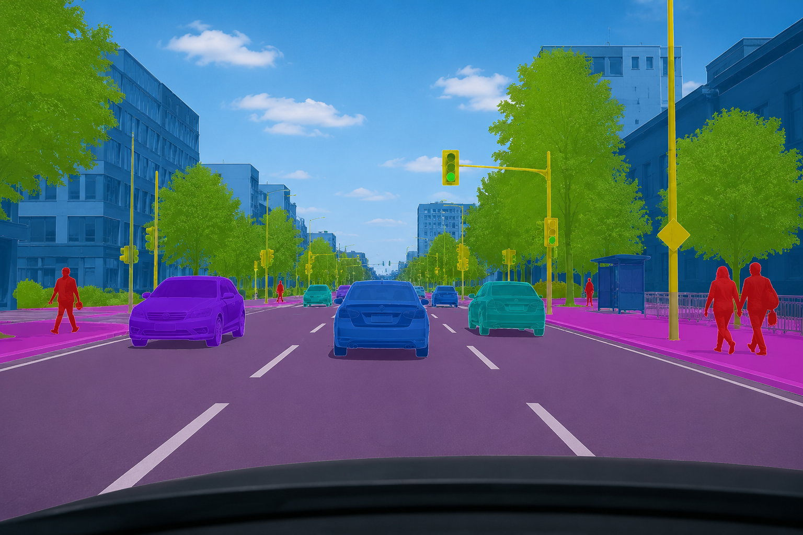

Current status
Participant recruitment and data collection are complete. Data analysis and paper preparation are ongoing. I will update this page when the results are ready to share.
Research project · Data collection complete
This project studies whether adaptive augmented visualisations can help people adjust their trust in automated driving so that it better matches the system’s behaviour. The participant study has finished. We are now analysing the data and preparing the paper.

AI-generated illustration for the trust-calibration study.Trust in an automated system can be too high or too low. In both cases, the user’s expectations do not match what the system can actually do. This study looks at whether visual feedback adapted through a human-in-the-loop optimisation process can support more appropriate trust.
I developed and maintained the Unity-based platform used for the participant study. I implemented the study flow, supported the adaptive visualisation process, prepared the participant and questionnaire steps, and helped run the study and collect data.
Participants experienced automated-driving scenarios with visual feedback that was adjusted through a human-in-the-loop optimisation process. The platform recorded the required study and questionnaire data so that the relationship between the visual feedback and trust calibration could be analysed.
This page keeps the method description brief while the analysis and paper are still being completed. More details will be added when the results are ready to share.
Participant recruitment and data collection are complete. Data analysis and paper preparation are ongoing. I will update this page when the results are ready to share.